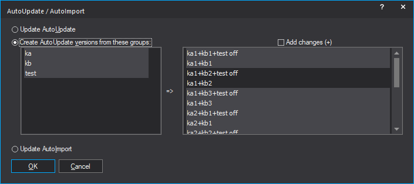

|
The command AutoUpdate + AutoImport (Menu Project) |

  
|
|
The command AutoUpdate + AutoImport (Menu Project) |
|
This function requires WinOLS 5.21 + FeatureUpdate |
With this dialog you can trigger AutoUpdate and AutoImport manually and create the versions for AutoUpdate.

AutoUpdate Versions:
When creating the versions, WinOLS calculates groups from all versions that are not already marked with AutoUpdate. Only versions ending with a number or "on" / "off" are considered.
In the screenshot the groups ka, kb and test were created from the versions ka1, ka2, ka3, kb1, kb2, kb3 and "test off". All possible combinations are then calculated from all selected groups. All selected combinations are then created as a version when you click OK.
Add changes:
If activated, the created version names start with a plus sign. This allows you to make changes outside of the source identifier fields that will not be overwritten by AutoUpdate.
Shortcuts:
Toolbar: -
Keyboard: -